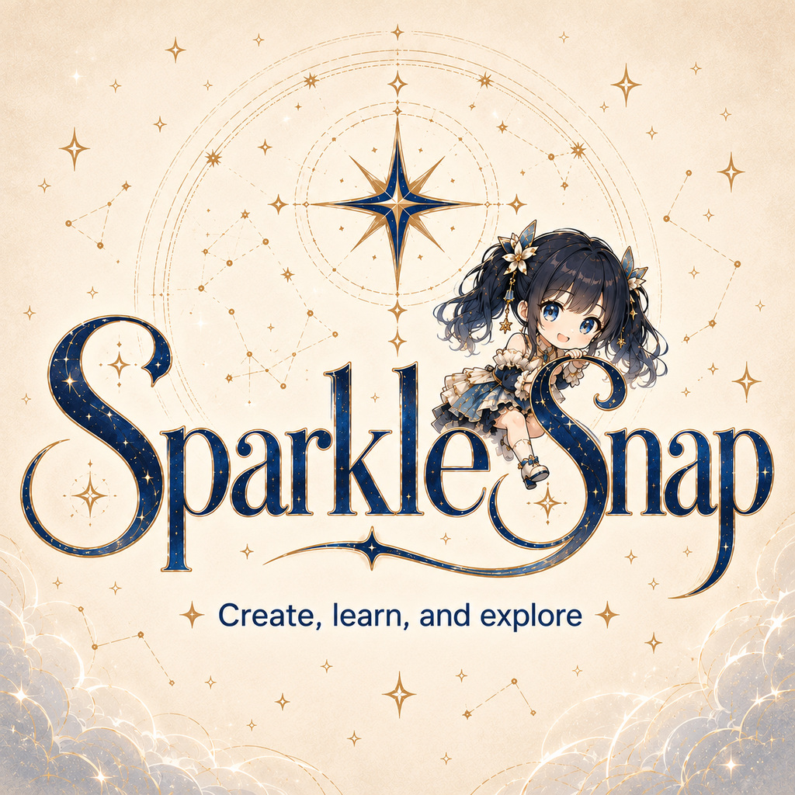

Grounding holds. Her recipe holds and colors the task. The latest sentence sets the task and the subject.
Add character direction in your own words.
Control response length and detail.
Choose how Momotamu and Vivi sound. Language applies to previews and conversation speech.
One language setting for both characters. This guides pronunciation; it does not translate replies.
These bundled references belong to the local VoxCPM2 route. Hosted providers use the voices selected in Voices. Language support and pronunciation depend on your provider, model and voice. Regional Chinese previews use a shared Chinese sample; try your own dialect text in Speech.
Checking local reference recordings…

Local multimodal LLM for duo reasoning and dialogue coordination.
Keys are managed by the desktop app.
Keeps a compressed memory plus recent exact dialogue. Adds model requests and may lose details. The complete session is always preserved.
Short fictional diary entries, private from the partner until you Reveal. Uses the same model; adds occasional requests.
Optional ai-discussion.md export. Saved sessions hold the full history. Unrevealed notebook entries are excluded.
Give your words a voice. Audio stays in memory for this session; choose Save audio to keep a WAV.
Enter the words you want to hear.
A delivery plan will appear after a voiced reply.